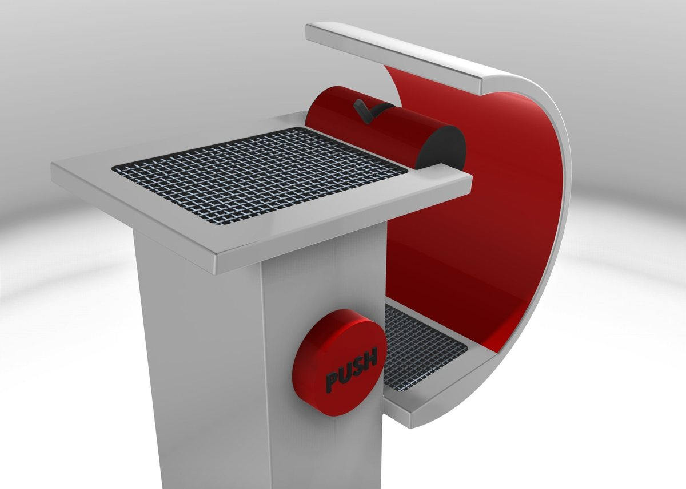
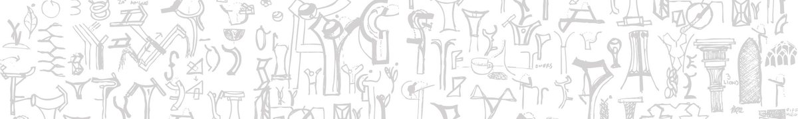
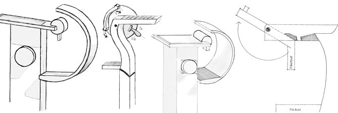
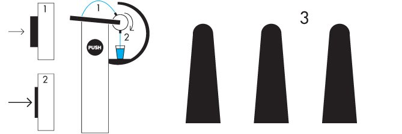
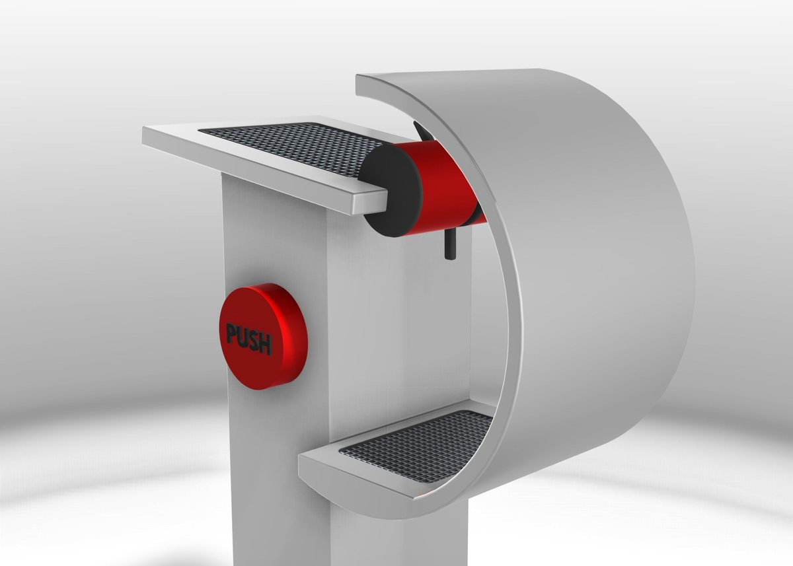

London
Most drinking fountains make refilling a reusable bottle slow and awkward: you tilt the bottle, it never fills, and the stream is weak. LONDON is a concept fountain designed for refilling a bottle as well as taking a drink.

From observation to form
Fill in: two or three sentences on what you saw people do at fountains, then how the form developed through the sketches



